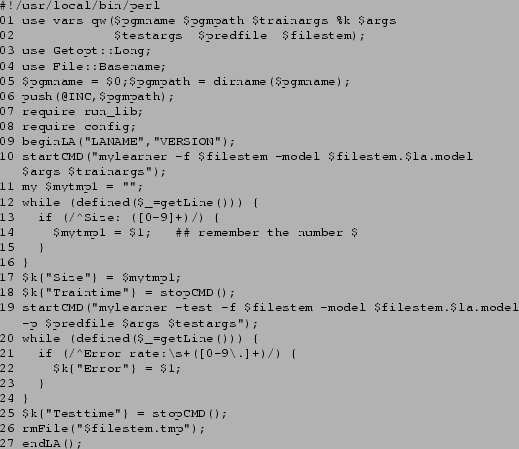

Next: Running Experiments
Up: METAL The METAL Machine
Previous: The Programs
Contents
Subsections
Adapting METAL-MLEE
If you want to use METAL-MLEE with other learning algorithms
than those for which interface scripts (see 5.2) already
exist, you need to create interface scripts for that purpose.
In a similar way, you can also add additional preprocessing algorithms.
Adapting METAL-MLEE to additional algorithms essentially
consists in adding the necessary interface programs. The
best way to do this is to copy and adapt an existing interface
program for a similar algorithm. The interface programs
are written in Perl, some knowledge of Perl
will be necessary to create a new interface program.
For each type of algorithm, there is a heavily
commented template file that can be used as a basis for
a new interface program.
In order to run a certain list of interface scipts automatically
(insteading of specifying them using the -l option
of the run_exp script), edit the config.pm
script and change the lists of script names given there for
the default classification, default regression, default
classification data-measurement and default regression
data-measurement algorithms.
In order to be usable with METAL-MLEE, the folliwng conditions
must be fulfilled:
- The learning algorithm should be able to read a training
file that is in a format similar to the format of the data file
described in Section 4. Similarily, the meta-data
required be the algorithm should be in a from that can be derived from
the names file. Unless the learning algorithm can use the data and names
files directly, it will be necessary to include a conversion filter
in the interface program.
- The learning algorithm should generate a persistent model file
that can be used to later assign values for the target variable for
new data records.
- It should be possible to separately call the training and
prediction (testing) phases of the algorithm.
- The prediction/testing function of the algorithm should
take the model file generated in the training phase and a data
file and generate a file that contains only the predictions for each
of the cases in the data file, one prediction in each line.
- NOTE: the prediction function of the algorithm should output
the prediction error which needs to be captured in the interface
script and returned to the main driver program
run_exp.
This program will regard a learning algorithm for which no prediction
error is returned as failed and abort the testing for that learning
algorithm. If the prediction function does not output the error,
a dummy value must be used unless the something went wrong (see below).
The correct prediction error will be calculated by the run_stats
program and be available in the .stats file anyway.
For classification learning algorithms refer to the template
run_cla_TEMPLATE, for regression learning
algorithms refer to run_rla_TEMPLATE.
Figure:
The run_cla_TEMPLATE file
|  |
Figure 1 shows the run_cla_TEMPLATE
file with all comments removed and line numbers added. To adapt
the file to some learning algorithm, copy it to a file
run_cla_xxx (for a classification algorithm) where
xxx is the name of the learning algorithm.
Follow the advice given in the comments in the template file to
program the interface file for your learning algorithm.
Here a few notes on adapting the template:
- Lines 1 to 8 should be kept untouched
- The LANAME in line 9 should be the same as the algorithm
name portion of the interface file (i.e. the same as the
xxx part in run_cla_xxx). VERSION should
reflect the version of the interface file (if you want to
diferenciate between different versions of the learning algorithm,
include that version info in the LANAME, e.g. myla2.1)
- Line 10 should contain the command needed to call the
training phase of the learning algorithm. The variable $filestem
will contain the filestem of the three files that are prepared before
each invocation of the interface file (the data, test, and names file).
The variables $args and $trainargs are the values
passed via the options -a and -at respectively.
- Lines 12 to 15 show a loop that will process each of the lines
that is output to stdandard output or standard error by the learning
algorithm. Within the loop you can search the output for
(numeric) information
that you want to pass back to run_exp which will
automatically record them in the .results file and
calculate averages. NOTE: you must process all output lines
in such a while loop, using the
defined($_=getLine())
condition, or the interface will not work properly! If you do not
need any information from the output, simply remove lines 13 to 15.
- Line 17 shows how to pass back the information to the
run_exp program: simply assign the value to
a hash variable where the hash key is the desired name of the variable.
- Lines 18 should be kept unchanged: it
shows how to finish the startCMD block
that was opened in line 10 and record the time used up by the
training phase of the learning algorithm.
- Line 19 starts the evaluation/prediction phase of the learning
algorithm by calling a different program or the same program with
the apropriate options for prediction. The variable $testargs
will contain the value for the option -ae.
- Lines 20-24 show how to process the standard output of the
algorithm. As for the training phase all lines must be processed
that way. In addition, run_exp will only work correctly
if you pass back the prediction error in the variable Error
as shown. If your algorithm does not output the prediction error
to standard output, you can work around the problem by passing
back an arbitrary value and ignoring the errors in the .result
file later, using the errors from the .stats file instead
(this is recommended anyway, since the errors in the .stats
file are more accurate)
- Line 25 finishes the startCMD block for the prediction
phase and should be kept unchanged.
- Line 26: the rmFile function should be used to
remove any temporary and working files the algorithm might have created.
- Line 27 must be kept unchanged.
Preprocessing algorithms will change the database before the learning
algorithm is applied. For each run_exp experimentation run,
you can optionally specify one preprocessing algorithm. That algorithm
will be called for each fold of the crossvalidation.
In order for run_exp to be able to call the preprocessing
algorithm, an interface script must be provided.
Preprocessing algorithms, like learning algorithms, have to
process the training and testing sets for each fold separately.
A typical interface script will contain two calls to the preprocessing
program, one for the training file and one for the test file.
Note: The preprocessing algorithm should never use information from
the class labels in the test set! The preprocessing algorithm should
always carry out exactly the same preprocessing transformation on the
test set as on the training set. If the preprocessing algorithm
adapts itself to the input dataset you must take care that this
does not happen when the test set is processed!
For example, a class-aware
discretization algorithm should discretize the numeric attributes
in the test set in exactly the same way as it discretizes the
attributes in the trainingset instead of calculating new
discretization intervals, based on the specific information in the test
set.
This is important, because of the practical reason that otherwise
the content or format of the generated training and test files could
be incompatible, but more importantly, because of the theoretical
reason that anything else would be cheating - using information
from the test set that should be regarded as completely
unavailble for the estimation procedure.
As with the interface scripts for learning algorithms, use
one of the scripts included in the package as a template.
Next: Running Experiments
Up: METAL The METAL Machine
Previous: The Programs
Contents
2002-10-17